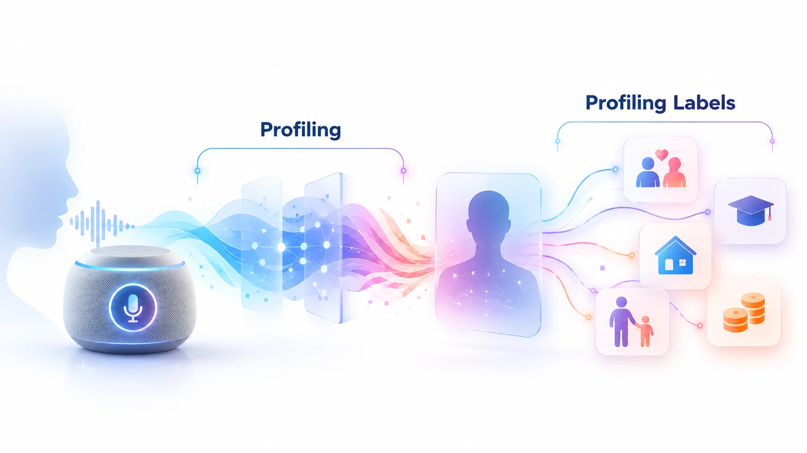

Privacy Enhancing Technologies Symposium (PETS) 2025
Echoes of Privacy: Uncovering the Profiling Practices of Voice Assistants
University of Southern California · Northeastern University

Abstract
Many companies, including Google, Amazon, and Apple, offer voice assistants as a convenient solution for answering general voice queries and accessing their services. These voice assistants have gained popularity and can be easily accessed through various smart devices such as smartphones, smart speakers, smartwatches, and an increasing array of other devices. However, this convenience comes with potential privacy risks. For instance, while companies vaguely mention in their privacy policies that they may use voice interactions for user profiling, it remains unclear to what extent this profiling occurs and whether voice interactions pose greater privacy risks compared to other interaction modalities. In this paper, we conduct 1171 experiments involving a total of 24530 queries with different personas and interaction modalities over the course of 20 months to characterize how the three most popular voice assistants profile their users. We analyze factors such as the labels assigned to users, their accuracy, the time taken to assign these labels, differences between voice and web interactions, and the effectiveness of profiling remediation tools offered by each voice assistant. Our findings reveal that profiling can happen without interaction, can be incorrect and inconsistent at times, may take several days to weeks for changes to occur, and can be influenced by the interaction modality.
Citation
@article{khezresmaeilzadeh2025echoes,
title = {Echoes of Privacy: Uncovering the Profiling Practices
of Voice Assistants},
author = {Khezresmaeilzadeh, Tina and Zhu, Elaine and Grieco, Kiersten
and Dubois, Daniel J. and Psounis, Konstantinos
and Choffnes, David},
journal = {Proceedings on Privacy Enhancing Technologies},
volume = {2025},
number = {2},
pages = {71--87},
year = {2025}
}